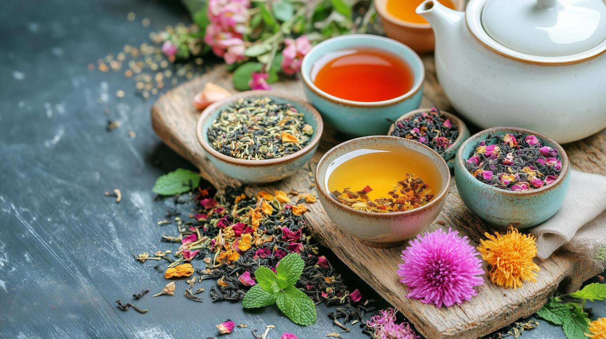

Patanjali’s Ayurvedic traditions also highlight herbs and natural remedies for daily balance:
Tulsi tea for immunity
Ginger tea for warmth and digestion
Turmeric milk for healing and anti-inflammation
Triphala for cleansing and digestion
These gentle additions complement a sattvic diet and keep the body in harmony.